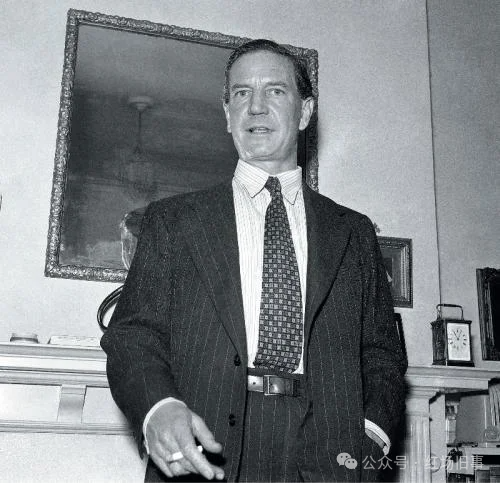
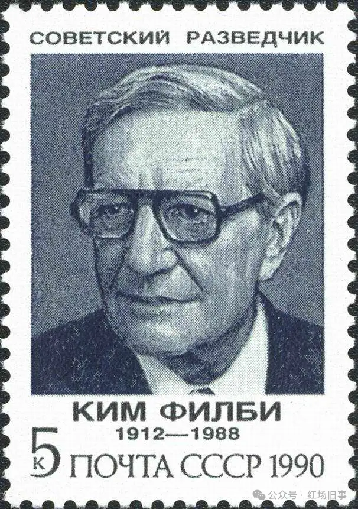
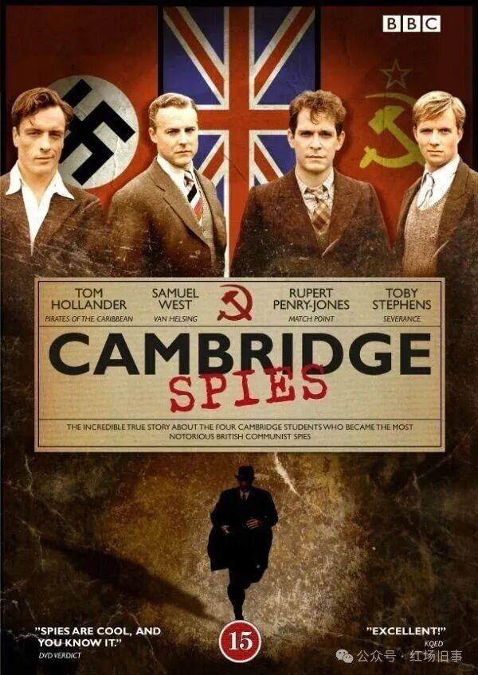
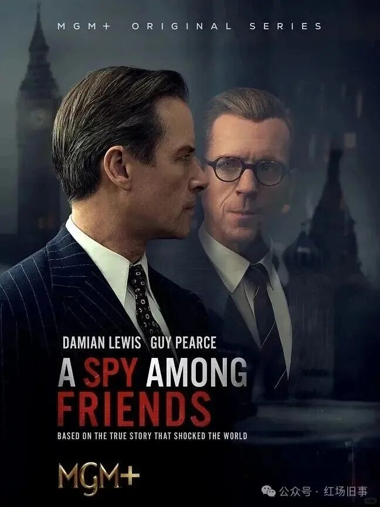

引子：1963年贝鲁特的深夜消失1963年1月23日，黎巴嫩贝鲁特。英国《观察家报》中东特派员金·菲尔比像往常一样走进办公室，和同事打了招呼。晚宴上，他与朋友们谈笑风生，毫无异样。深夜，他回到家中，亲吻妻子埃莉诺，说第二天要去土耳其采访。第二天他没有回来。第三天也没有。一周后，消息传来：菲尔比已在莫斯科。英国情报界炸了锅。这个人，曾是军情六处的明日之星、被内定为未来“C”（局长）的人选，竟然是潜伏了30年的苏联间谍。他是剑桥五杰中最传奇的一个，也是让英国情报界蒙羞最深的一个。

伯吉斯、麦克林、菲尔比、布朗特、凯恩克罗斯
一、潜伏起点：剑桥的信仰觉醒
1912年，菲尔比出生于印度一个英国官员家庭。父亲是著名的阿拉伯语言学者，曾任丘吉尔的顾问，菲尔比17岁进入剑桥大学三一学院。20世纪30年代初——经济危机席卷西方，法西斯主义在德国抬头。剑桥的年轻人们激烈争论着世界的未来。苏联社会主义吸引了大批理想主义者。菲尔比后来回忆：“那时的剑桥，你不可能不关心政治。”1933年，他游历柏林，亲眼看见纳粹暴行。回到伦敦后，一个叫“奥托”的神秘人约他见面。奥托开门见山：“你愿意为反法西斯事业工作吗？”菲尔比接受了。从此成为苏联情报员。代号：Stanley。后来人们问奥托的真实身份，菲尔比到死没有说。档案记载，他是苏联内务人民委员部招募员阿诺尔德·戴奇。
二、巅峰操作：从记者到军情六处
1936年西班牙内战爆发。菲尔比以《泰晤士报》记者身份潜入佛朗哥后方。他的报道客观中立，甚至让佛朗哥亲自给他授勋。没人知道，所有情报同步发往莫斯科。

二战爆发后，机会来了。军情六处急于招人，菲尔比的一个记者朋友把他推荐进去。军情六处简单看了看档案——剑桥毕业、父亲是政府顾问、本人是资深记者——就把他录用了。菲尔比后来调侃：“他们从没认真审查我。如果我出了问题，那将是巨大的丑闻，所以他们就干脆相信我是清白的。”1944年，军情六处成立第九处，专门负责对苏情报。菲尔比敏锐地意识到这是关键职位。在苏联指示下，他巧妙运作，成功取代上司考吉尔，成为第九处处长。这意味着：英国针对苏联的所有情报工作，全部由一名苏联间谍掌控。
三、沃尔科夫案：差点暴露的致命时刻
1945年8月，一份绝密文件摆在菲尔比桌上。苏联驻伊斯坦布尔副领事康斯坦丁·沃尔科夫试图叛变，向英国领事馆写信：他手里有苏联在英国外交部的两名间谍、情报界的五名间谍名单。他特别警告：电报不安全，苏联已破译英国密码。菲尔比读完，后背发凉。七个人里，肯定有他。他向局长孟席斯建议：“沃尔科夫点名要保密，但电报确实不安全。最好派专人去伊斯坦布尔面谈。”孟席斯同意。菲尔比主动请缨。但孟席斯安排的是军情五处的罗伯茨——罗伯茨晕机，要坐船去，至少十天。菲尔比抓住机会：“太慢了，沃尔科夫可能变卦。还是我去，立即出发。”登机前，他已经通过联络员把消息发往莫斯科。等他飞到伊斯坦布尔，沃尔科夫“失踪”了。英国领事馆被告知：“沃尔科夫请病假，不能见客。”实际上，沃尔科夫已被强行送回莫斯科，不久后被处决。菲尔比后来说：“那一刻是我人生最紧张的几天。”
四、暴露疑云：麦克莱恩出逃与怀疑
1951年，更大危机来了。美国联邦调查局破译了一批苏联电报，确定英国驻华盛顿大使馆存在一名高级间谍。目标指向外交部美洲司司长唐纳德·麦克莱恩——剑桥五杰之一。菲尔比必须救他。但如何通知？就在这时，外交官盖伊·伯吉斯——也是五杰成员——因酗酒闹事被召回伦敦。菲尔比灵机一动：让伯吉斯去通知麦克莱恩。5月25日，伯吉斯租了一辆车，开到麦克莱恩家中。两人连夜出逃，甩掉跟踪的特工，几天后出现在莫斯科。“鸟儿飞了。”军情五处驻美代表打电话告诉菲尔比。菲尔比装出震惊，内心长舒一口气。但怀疑随之而来。美国中情局向伦敦发来备忘录：菲尔比与伯吉斯关系密切，且经办过沃尔科夫案，他本人可能是间谍。1952年至1955年，菲尔比先后接受三次审讯。审讯官一个比一个厉害，最后一个威廉·斯卡登曾诱供出原子间谍克劳斯·富克斯。但菲尔比顶住了，滴水不漏。1955年，外交大臣在下院声明：“没有证据表明菲尔比曾经帮助过伯吉斯和麦克莱恩。”菲尔比赢了。但军情六处不再信任他，他被迫辞职。
五、逃往莫斯科：最后一幕
1956年，菲尔比以《观察家报》记者身份前往贝鲁特。表面上是媒体工作，实则为军情六处继续收集情报。苏联方面与他重新建立了联系。1962年，一名叫戈利钦的苏联间谍叛逃美国，供出了菲尔比的真实身份。消息辗转传到伦敦。1963年1月，军情六处老友尼古拉斯·埃利奥特来到贝鲁特，与菲尔比当面对质。菲尔比沉默片刻，问：“你有确凿证据吗？”埃利奥特点头。菲尔比说：“这个时刻，我想象了28年。现在它来了。”接下来两周，他安排妻子回英国探亲，收拾好文件。1月23日深夜，他登上—艘苏联货轮，消失在茫茫夜色中。三个月后，莫斯科宣布：批准菲尔比政治避难。
六、苏联晚年：荣誉与孤独
在莫斯科，菲尔比被授予红旗勋章、列宁勋章。他培训克格勃新人，传授潜伏经验。在一段1981年的录像中，他说：“每天晚上我离开办公室，都带着装满文件的提包……然后交给苏联联络人，次日上午放回原处。”他还承认，1949—1950年英美联合对阿尔巴尼亚的渗透行动被他出卖，导致100多人被杀。但晚年的菲尔比并不快乐。他思念英国，思念家乡。曾负责照看他的克格勃官员说：“他从来没有后悔过，但他很想念英国，因为他是个地地道道的英国人。”1988年5月11日，菲尔比在莫斯科病逝，享年76岁。安葬在孔策沃烈士公墓，同苏联英雄们葬在一起。

他的妻子在他去世后，试图将他的个人档案卖给大英图书馆，被英国政府阻止。最终在苏富比拍卖行以15万英镑成交。
档案佐证：2025年最新解密
2025年1月，英国国家档案馆公布了最新一批军情五处档案，其中包括菲尔比1963年的部分供词。档案显示，菲尔比对埃利奥特说：“我对军情六处确实有极大的忠诚，我在那里得到了极好的待遇，结交了一些非常好的朋友。但最鼓舞我的来自另一方。”他还说：“我患了30年的‘可控的精神分裂症’。”当埃利奥特问，如果人生重来一次会怎样选择，菲尔比回答：“如果让我重新活一次，我大概还是会这样做。”这份档案，是菲尔比留给世界最后的自白。
互动推理
金·菲尔比是20世纪最成功的间谍之一。他为苏联效力30年，出卖了沃尔科夫，破坏了英美在阿尔巴尼亚的行动，拯救了麦克莱恩和伯吉斯。但他也是一个矛盾的人——一生都在两种忠诚之间挣扎。你认为，菲尔比的信仰是纯粹的理想主义，还是他在为自己的选择寻找理由？欢迎在评论区分享你的推理。由于篇幅的原因，没办法展开细讲，大家感兴趣的话可以去看英剧《剑桥风云》和《敌友难辨》，前者讲述了世界间谍史上最富传奇色彩的“剑桥五杰”，后者故事围绕着五杰之一的金·菲尔比和尼古拉斯·艾略特展开，两人是军情六处的同事兼密友。
《剑桥风云》


《敌友难辨》
下一期预告：红色乐队——纳粹心脏里的苏联情报网
布鲁塞尔、柏林、巴黎——一个由120名特工组成的庞大网络，如何在盖世太保眼皮底下运作？他们的密码如何被破译？被捕后又如何反手布下惊天骗局？敬请期待。